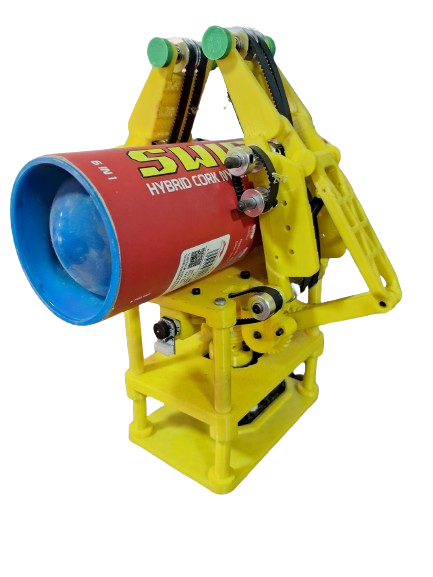

-
Control Systems, Robotics, and Mechanical Design
Acti-V-Link: An Active Surface, Visual Feedback Based, Mechanically Underactuated Gripper for In-Hand Manipulation
Me being too interested in everything going around in the club led me to this final year project of the two seniors Karthik Sir and Saad Sir.
FYP Presentation day
AfterMath
• We met the legend Phalle sir to show our 2nd iteration on design. Me and Saad explained him the whole mechanism and asked his advice to write the paper in the internation conference known as ROBCE2024. The funniest part was neither he nor his PhD students could actually understand the mechanism clearly. One of his student suggested to cover the outer belts so that they don't hinder with the object :)). Me and Saad knew that we have come to the right place. But then Phalle sir said something even more delightful... that we should use the mechanism to help rescue cars on the highway.
• Nevermind... After such inspiring words we wrote the paper for ROBCE2024 and it was successfully published. After so much hardwork and collaboration issues with Karthik in Hyderabad and Saad in IIT Bombay and me in VJTI it always seemed impossible to get published... But this is the proof of dedication by Karthik and Saad Sir.